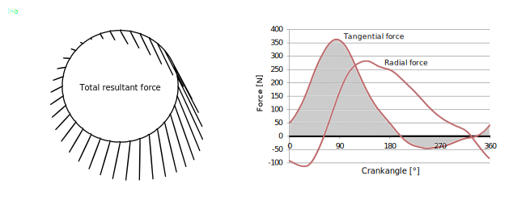

Introduction
Frank Whitt and David Gordon Wilson wrote the first edition of Bicycling Science in 1974, the second one in 1981, and after Whitt's death, Wilson authored the third edition in 2004, with many contributions from Jim Papadopoulos. Wilson was also the principle editor of the journal Human Power, an associate editor of this online-journal HPeJ, and a founding member of its host HuPI. For the fourth and present edition of Bicycling Science, Dave Wilson engaged me as coauthor and we spent several years working on the book. Sadly he passed away shortly after we handed in the final draft manuscript in April 2019, leaving a great gap in the HPV and other movements and groups including us at HuPI. The book's front matter contains authors' prefaces and a memorial text by Beth Clevenger of MIT Press.
I supplied much new text and many figures, but in general, we tried to keep as much of the still applicable material from the third edition (477 pages) as possible while expanding with newer developments to 552 pages. Also many of the contributions by Jim Papadopoulos were carried over, however the entire chapter on materials and some appendices had to be left out for reasons of space. This article now presents a short personal synopsis of each chapter, especially including some items new in the fourth edition.
[Editor's note: This article is in HTML only. Some of the drawings are in SVG format, which modern browsers should show sharp in any size.]
Chapter 1 - A Short History of Bicycling
This chapter contains the material of the third edition and adds sections on power-assisted and electric (pedelec) bicycles. Starting with treadmills, then the first bicycle, the Draisinne, is described, then the addition of pedalling propulsion, the high-wheeler, tricycles and quadracycles, the modern safety bicycle, all-terrain bicycles, and recumbents.
Probably the first recumbent bicycle, by Charles Challand in Geneva, about 1895.
The chapter continues with new material on power-assisted bicycles. This starts briefly with perhaps the first steam-powered one in 1868 and the first electric one in 1881, but commercial electric bicycles not until 1932. A patent for the principle of the pedelec, whereby an electric motor is controlled by the pedals, was awarded in 1975, and suitable legislation for these appeared in 1983 in the UK. Yamaha invented its PAS Power Assist System in 1989 but didn't sell any until 1994. Therefore the Velocity lauched in Switzerland in 1992 was probably the first commercial pedelec, and with suitable legislation ("Swiss fast class") allowing hybrid operation up to any speed (today limited to 45 km/h). Soon after pedelecs made by Flyer, BionX, Giant and others started to become popular. At the time of writing, such pedelec-drives were beginning to be used in cargo bicycles and mountain bikes, and these types have since gained a lot more popularity.
The Velocity (top) in 1992 was probably the first commercial pedelec, certainly the first "fast" pedelec and to date the only mechanical series hybrid. The subsequent model Dolphin (bottom) and its clones were produced until the death of their inventor Michael Kutter in 2015.
Chapter 2 - Human Power Generation
This chapter also follows the structure of the third edition, starting with the measurement of human power output and its pitfalls. The widely cited figure of human power versus duration is updated with some new data, e.g. with the mean Functional Threshold Power (FTP) of ~260 W for one hour, close to the NASA curve for "healthy men", and the Niesenlauf, climbing a mountain staircase for an hour, at ~350 W close to the NASA curve for "first-class athletes", always assuming 75 kg men.
Ways of measuring human power are discussed, including pitfalls arising from wrong assumptions about some methods. With most ergometer measurements the subjects are uncooled, so that power levels are smaller than on the road. The often-used Monark-style ergometer uses a basket for adding weights to load a brake band, and for years researchers assumed the retarding force on its flywheel to equal this weight. This is, however, not generally the case, so many published power measurements could be overestimates by almost 15% (Franklin et al. 2007).
How a belt tensioned between a spring scale and a weight can be used to produce and measure the tangential force on the wheel of a stationary bicycle (left). The layout (in a larger scale) of the popular Monark-style ergometer using a differential pulley (both discs are connected) and weight-basket B attached to a brake rope wound around the flywheel. The results of this model are only accurate with a friction coefficient between rope and flywheel of over 0.35. (Adapted from Vandewalle and Driss 2015, licensed CC BY 4.0.)
The chapter continues with an overview on how muscles work and the main six muscle fuels: ATP und PCr for immediate use, carbohydrates (glucose, glycogen and lactate) for medium-term use, and fat for long-term use. The various mechanisms of metabolism are described, with quantitative calculations relating to energy content and oxygen uptake. Several new rules of thumb are derived and the important role of basal metabolism expanded. The energy cost of cycling especially at low power levels depends strongly on whether the basal metabolic rate is included or not. A further consideration is the type of food consumed and the gray energy needed to produce this. Depending on the assumptions, cycling can be taken as extremely efficient or as less efficient than some motor vehicles.
Then the effect of pedalling forces, pedalling positions and crank lengths are examined, also of other motions than pedalling. Non-round chainwheels and lever mechanisms are also described.
Typical pedal-force pattern showing magnitude and direction of the total force of one foot on one pedal (left). A different example with the force resolved into (noncontributing) radial and (effective) tangential components (right). (Adapted from Smartfit.bike diagrams of measured data, courtesy Radlabor.de)
The chapter concludes with an expanded study of thermal effects, mainly the four basic methods of cooling the body: radiation, convection, conduction, and perspiration. These are quantified for different cases and in relation to temperature, humidity and wind speed, also in the other direction: wind-chill. The chapter concludes with musings on artificial cooling, so far not heard of in cycling, but standard in space travel.
Chapter 3 – Speed Achievements and Racing
This is an entirely new chapter in the fourth version of Bicycling Science. It summarizes cycling achievements as registered by various sports and record organizations and considers what might be possible in some theoretical scenarios. Of interest here are more the human and technical achievements themselves, rather than by whom they are achieved or in which country.
The chapter starts with pure gravity records both upwards and down. The vertical kilometer for runners stands at just under thirty minutes, that for cycling up the equivalent height of Mount Everest (8848 m) equates to just over 1 km/h altitude gain. Downhill speeds of 227 km/h have been recorded on a bicycle (255 km/h on skis). The latter records could also be considered indirectly human-powered if the ascent is done this way, unfortunately seldom recorded.
In order to achieve high speeds on level courses, vehicles and riders need a minimal distance for acceleration that is the greater the more efficient the vehicle is. From 300 m to around 10 km is needed in order to reach maximum speed, depending greatly on the type of vehicle.

Plot (simulation) of speed versus distance for various bicycles and tricycles, accelerating from rest. The cyclist’s power output is taken to be constant at 500 W.
The following photos show various bicycles from unfaired to fully faired, both taken by Michael Amman on the velodrome in Oerlikon near Zürich.
Recumbent bicycles from unfaired to partially faired on a banked curve with a child's bike below. They are also roadworthy practical vehicles, legal when fitted with lights.
Charles Henry in his Peregrin on Birk fully-faired vehicle, winner of several European speed events. It would figure between the second and third topmost curves in the drawing above. It is also street-legal, as the feet can reach the road through flaps.
Most speed records attempt to be independent of gravity by imposing maximum permissible slopes or round courses. The chapter shows that this isn’t always achieved very well and describes for the first time the exact way that local elevations or depressions can influence speed measurements. Depending where they occur within a timed course or its run-up, they can make a run slower or faster. Grasping this intuitively or analytically is difficult, but simulation programs like Velocipedio allow to compare situations.

Five phases of speed variations as a function of distance, when a rider with a road bike (total 85 kg) overcomes a local elevation rising and descending 5 m over 2 × 167 m (simulation with constant 235 W). The average speed of phases 2, 3, and 4 is 30.3 km/h, which is (slightly) slower than the 31 km/h without the hill.
As the previous figure, but for a 5 m local depression. The average speed for phases 2, 3 and 4 is 30.5 km/h, which is (slightly) slower than without the dip (31 km/h). However, the average speed of phases 2 and 3 is 32 km/h, which is faster than without the dip.
Speed records are highly dependent on the conditions imposed. This starts with the definition of the bicycles or other human-powered vehicles used. Traditional bicycle racing defines bicycles and the positions of their riders rather strictly, other events permit recumbent positions and aerodynamic fairings, partial or complete, and any number of wheels.
The highly variable nature of human power gives the course-length a great importance and whether the start is “standing” or “flying”, and in the latter case, whether the run-up is limited and if so, by how much. Human-powered sprint-races are really a test of optimal acceleration in addition to minimal aerodynamic and rolling resistances. The chapter lists the best speeds for the events where they are known for both traditional bicycles and HPVs. This leaves mainly the 200 m sprint and the hour record.
A further effect with significant influence on speed records is the altitude. The thinner the air, the less is the air drag but also the less is the amount of oxygen in lungs and bloodstream. This results in a certain optimal altitude for each event and rider. For example, for a UCI-bicycle the best altitude for an hour record is reckoned to be 2000-3000 m, depending on rider and degree of acclimatization.
Some records remove the effect of air drag partially or completely by allowing drafting behind a team member, a motorcycle or even a specially designed moving wind shield. This is discussed and also the ultimate removal of air drag (and potentially most rolling resistance) by cycling on the moon!
Ultra long distances such as circumnavigations are difficult to compare, especially as they require at least hybrid vehicles and often hybrid power sources. The fastest entry in a solar bicycle race in 2018 averaged 245 km per day for 12’000 km.
The chapter concludes with some observations on human power enhancement, i.e. doping. There is a fine line between legal substances such as dietary supplements and banned ones, such as steroids. “Motor doping”, the use of a concealed, undeclared motor is also examined.
Chapter 4 – Power and Speed
The chapter starts with the description of the various resistances that a cyclist must overcome: aerodynamic, rolling, slope, and bump. The well-known expression for aerodynamic frontal drag is made plausible. Bump resistance is difficult to quantify, but can easily be several times the rolling resistance on smooth surfaces. Acceleration can also be treated as a temporary resistance. When slowing down, this becomes negative, as does slope resistance. With known resistances it is easy to calculate the power required for cycling as a function of speed. The reverse, calculating speed as a function of power, is trickier. Analytical and numerical solutions are described, as are calculating tools both online and in spreadsheets. Some of these perform simulations, that is they include acceleration resistance and sometimes course data and plot curves. Various ways of obtaining vehicle data are given, such as on-road measurements and coastdown-tests.
Power plot for a roadster bicycle (total mass including rider 93 kg, CR = 0.008, CD A = 0.6 m2) ascending a 1 percent slope. The powers for resistances P rolling, slope, and aero drag are shown as areas, with the top line representing the total.
The energy cost per distance is then discussed, also in relation to other human powered and non-human powered locomotion, including walking and running, roller and ice skating, and horses to ships. New in the fourth version of this book, the effect of the human engine’s basal metabolism is discussed and included for one example: the operation of a basic “roadster” bicycle in still air on a level road is most efficient at about 3 m/s or 6 mph and then requires about 70 kJ food energy per km distance.
Food energy consumption in bicycling as a function of speed, assuming a net metabolic efficiency of 23.9%. Curves do not include basal metabolism (energy for living), except the dashed one, which shows data for a roadster bicycle plus a basal-metabolism consumption of 20 cal/s.
Chapter 5 – Bicycle Aerodynamics
At higher speeds, air drag is the single most important impediment, rising as it does about with the square of the speed and the power hence as the cube of the speed. Streamlined shapes and a few other tricks for reducing this are described. In addition to the frontal drag introduced in chapter 4 the concept of skin friction drag is presented. Its coefficient follows a decreasing but irregular function of speed, so that the exponents stated above can in practice be smaller than 2 and 3.
Reducing drag is a tradeoff between reducing area and drag coefficient, but practical considerations set limits to what can be achieved even with vehicles not bound by traditional bicycle definitions or rules of the road.
The NACA 0021 is a conventional low-drag profile suitable for struts or HPV-fairings. The NACA 66-021 offers lower drag if most of the boundary layer can be kept laminar. The Clark Y is a popular flat-bottom profile for propellers.
Wind on the whole does not help cyclists, especially gusts both natural and from other vehicles. Several partially conflicting schools of thought are described for avoiding unsafe reactions. However in those places with steady winds and few obstructions from plants, structures and other vehicles, especially streamlined vehicles could sail quite well, even with no actual sail other than the fairing itself. This rather theoretical scenario is quantified and references given to vehicles which in ideal conditions can sail in any direction at several times the wind speed, some using air turbines and propellers. Alas, most bicycles in most places cannot profit at all from these examples, but nobody has yet tried a roadworthy bicycle fitted with a small, highly controllable air propeller/turbine connected alternatively to the wheels or pedals.
Power plotted as a function of the heading of a vehicle on a circular course, from a headwind (0°) to a tailwind (180°). Wind speed is 5 m/s; vehicle speed is 10 m/s; mass is 100 kg, including rider; coefficient of rolling resistance is 0.005. The fairing is a half-lens shape close to the ground with an aspect ratio of 1 assumed. Ground-drag effects are neglected. The solid horizontal line is the no-wind power. The dashed line shows the average power if the “negative” (=harvested) power is storeable, the dotted line if not.
Chapter 6 – Rolling Resistance
At low speeds on a level course, rolling drag is the largest resistance component. The chapter starts with some historical descriptions and data and then presents the factors which influence it: wheel size, number, material, load and width, tire construction, pressure and temperature, riding speed and surface. Some theoretical functions for these are given, but mainly empirical data in graphs for both solid and pneumatic tires. Riding on soft ground is also treated.
Artist’s impression of a hard cylindrical wheel rolling through dry sand with an internal friction coefficient φ = 30°. The solid lines show the initially undisturbed ground and shell-like surfaces along which the soil slips, forming the hill ahead and the rut behind. This is an abstraction of a really three-dimensional situation, where the emerging material is also pushed sideways.
Of greatest practical interest are the coefficients of rolling resistance CR of usual pneumatic tires as a function of type and various parameters. Most test data is obtained either at very low speeds or from measurements against rolling drums. A correction formula originally by Schuring in 1977 is CR[flat surface] = CR[measured on drum] / (1 + diameter wheel/diameter drum)0.5. This appears validated in the following figure by measurements all of the same tire in various ways and at various speeds and loads. The plot also shows that the usual assumption, that CR is independent of speed, is inaccurate.
Measured data plots of CR of the same tire model as a function of speed, with pressure and load as parameters. The bottom two solid-line plots were measured tire-to-tire, the others tire-to-drum. Data by Leonardi Datza and Charles Henry. The bottom dotted lines show the the upper dashed-line plots, transposed using the Schuring-formula.
A further diagram compares a great many different types of tires all measured the same way on the same drum, as a function of inflation pressure.
Various tire data all measured on the same 0.77-m-diameter drum with a structured metallic surface, at room temperature, but after a 30-minute warm-up. The load is 417 N and the speed 29 km/h (18 mph, ~8.1m/s). The CR values are directly calculated from the drum forces, i.e. not transposed. Four groups of tires are shown, from the “best” to “worst” per group. Two possible lower limiting-lines are also shown. (Data from bicyclerollingresistance.com.)
Different methods of measuring and comparing rolling resistances of various types of wheels are described. Coefficients CR range from about 0.001 (railways) through 0.002-0.01 (well-inflated bicycle road tires), 0.02-0.04 (natural surfaces) and 0.1-0.5 (extremely soft ground).The chapter also treats solid tires. As expected, those made of polymers generally cause more rolling resistance than pneumatic ones, but not always, and sometimes the extra reliability is worth it.
Chapter 7 – Braking
Mechanical braking generally involves sliding friction at the brakes themselves, which converts kinetic energy to heat, and static friction between the wheels and the ground. The chapter discusses the achievable coefficients of friction and the actuating forces needed for various types of brakes. Previously most bicycle brakes were rim brakes, and they are still in widespread use. Their problems involve that a large degree of travel is needed to accommodate untrue wheels, and also flexing and long cables, which limits the braking force available from hand levers, that may be insufficient in wet weather. Solutions for this are discussed. Today hydraulic actuation and disk brakes generally allow ample braking force at all times. Because of the build-up of heat from the braking surfaces, mechanical brakes become very hot with prolonged heavy use and components may fail. Some ways of calculating these temperatures are shown. Electric brakes (“free” in some electric bicycles) may help avoid this and decrease the wear of the mechanical brakes, which are required in any case for legal reasons.
Rim brake in a roller-cam configuration. In principle any type of leverage could be made available by the choice of cam geometry but the amount of travel required limits this in practice. (Photo by Jeff Archer, adapted TS under a CC-BY-SA 3.0 licence.)
The longitudinal stability of an upright bicycle is generally overcome before its front wheel can skid: it then flips forwards. Maximum braking is with the rear wheel just lifting with a typical maximum deceleration of 0.5 g (~4.9 m/s2), as is worked out in the text. Long recumbent vehicles are not thus limited and can apply both front and rear brakes up to the adhesion limit of all wheels, achieving maximum deceleration of typically 0.8 g and exceptionally a little more. A 2-dimensional braking program by Junghsen Lieh is described using these two examples.
An often asked question is answered: how much braking power must be dissipated as a function of speed and slope? Our figure with a typical bicycle and rider descending a 10% grade shows this power increasing rapidly to a maximum of about 500 W at 9-10 m/s and then decreasing to zero at the top coasting speed of 16 m/s or so.
Forces on a slope s (angle α). The power dissipated in the brakes is the net downslope force (m g [sin α − CR cos α] − ½ ρ CD A V2) multiplied by V, or for small slopes V (m g [s − CR] − ½ ρ CD A V2). Plotted for a 85 kg bicycle-with-rider with a CD A of 0.5 m2 and a CR of 0.0033 braking down a 10% grade. (Cyclist drawing courtesy MIT Press)
Chapter 8 – Steering, Balancing, and Stability
After some musing on gyroscopic bicycles and balancing with reaction wheels, this chapter contains much of the theory from the third edition. Since then, however, the difficult question on how bicycles balance, exactly, has been mathematically resolved and demonstrated with models. In 2011 the US-Dutch team of Kooijman, Meijaard, Papadopoulos, Ruina and Schwab managed to build a riderless bicycle with no trail and tiny, nongyroscopic wheels, demonstrating conclusively that a bicycle’s mechanism for balancing and even self-steering does not need wheels with trail or gyroscopic action. The team also attractively documented their research.
In practical terms, bicycle balancing and stability is less mystifying because we have developed a feel for it, with so much riding of all kinds of bikes including scooters and strange bi-things even lacking wheels.
Bicycles can be perfectly adequately balanced and steered not just with the use of large wheels, but also using very small wheels, skis, or as shown here, spokes with boots on them! (Photo by Jean Gerber.)
Recumbent bicycles appear more difficult to analyze, and indeed some, like the original Flevobike, derived cult status by their near unridabilty, but hands-free riding once mastered. Rohmert and Gloger systematically examined optimal configurations using their adjustable Multilab featuring a mirrored front wheel.
(left) Mirror-symmetric fork geometry by Rohmert and Gloger and conventional geometry (dotted lines). Note the larger fork offset required. (right) Conventionally the steering torque increases as a result of trail and decreases with large angles because of wheel flop. In the mirror-symmetric geometry, both trail and wheel flop work in the same direction.
No mystery at all is the balancing of three- or four-wheelers, but these tend tip over or slide in too-tight turns, and may even go out of control while riding straight at high speeds. Unfortunately the criteria for avoiding this seem contrary to those ensuring aerodynamically stable behavior, and this question is still being discussed.
The chapter concludes with material on shimmy carried over from the previous edition.
Chapter 9 – Power Transmission and Hybrid Systems
A transmission is the connection between a vehicle’s power source and the driving wheel(s). Its purpose is to transmit power with as little loss as possible, and to transmit it in a way that enables the rider’s limbs to move in as near optimum a manner as possible. And to do so in such a way that at one favored speed, at least, and perhaps over a range of speeds, the rider either is exerting maximum possible power or is producing a lesser amount of power in maximum comfort. In spite of countless measurements, efficiency curves as a function of both pedaling speed and torque are rare. The figure offers one presentation of measurements by Sergio Savaresi and members of the mOve research team at the Politecnico di Milano.
Contour lines of human gross efficiency (mechanical power output / metabolic power input) as function of power output and pedalling speed. (Courtesy Sergio Savaresi)
The chapter continues with descriptions of common historical and newer transmissions and their efficiencies, especially of chain drives. These continue to represent the most popular mechanical bicycle transmission because of relatively low cost and high efficiency, even for recumbents, where up to double lengths are needed. Laboratory measurements for complete drives (chainwheel, chain, and sprocket) achieve over 98% in optimal conditions, e.g. a 2:1 step-up under 250 N chain tension, decreasing to 80% with a 4:1 step-up under 75 N tension. Real-life dirty and worn chains are bound to be poorer, and here hub gears and modern gear-boxes can achieve, and presumably maintain, over 90% consistently for most gear ratios. However, these also require a single-speed chain or belt transmission, except in the case of direct-drive bicycles, a promising but not yet (or anymore) available bicycle type described, for example by Jeremy Garnet.
New in this edition is extensive treatment of electric and hybrid transmissions. It starts with the chainless transmission using a pedal generator together with an electric motor making possible a neat package without any mechanical components. Although a pure transmission is possible in this way, in general both electronic control and battery storage is implemented, constituting an electrical series hybrid arrangement. With these there is a tendency towards powerful machines with motors rated at 8 kW or even 28 kw, really motorcycles, where the pedal generator is more of a controlling than a powering element. Normal pedelecs, that is electric bicycles whose motor is controlled by pedalling, are parallel hybrids that enjoy simplified legislation with motors limited to 250 w, 500 W, 750 W or 1000 W depending on country, type, and speed range, and 4 kW for pedicabs and the like. In Europe pedelecs with 250 W motors that cut out at 25 km/h may be operated without licenses or insurance. Only one make of mechanical series hybrid appears to exist, the Velocity featured at the beginning of this page. Here the motor and the pedal drives each act on a differential, so that speeds, and not torques, are mechanically added. This allows a large speed range without gear shifting.
Most pedelec systems use motors located at the bicycle's bottom bracket, so that a rear derailleur or hub gear provides gearing for both power sources. A second popular system uses a rear direct-drive hub motor. This must operate over the wheel's entire speed and torque range without any gearing. This type is more useful for speed riding (today limited to 45 km/h in many countries) whereas the former type can be adopted even to mountain bikes.
Stator of a brushless, gearless BionX D hub-motor system with eighty-four poles and controller. The rotor (not shown) consists of thin magnets attached to the casing inside the spokes of a wheel. At ~0.34 m diameter, it will just fit into a 20 inch wheel. The 3.9 kg motor is rated at 500 W and 25 Nm (50 Nm peak).
The chapter closes with some musings on control, batteries and developments.
Chapter 10 – Special Human-Powered Machines
Human-powered vehicles (HPVs) include not just bicycles and vehicles with more or fewer than two wheels, but also boats, airplanes, amphibious vehicles, and so forth. It is doubtful whether devices such as sleds, skis, or even shoes can be called HPVs, but the wider term human-powered mobility surely covers these, and “human powered” can also be applied to machines and even tools in everyday use. Therefore this chapter carries over examples of human-powered tools from the last edition of this book, notably grass-cutting and snow-removal devices, and then goes on to the many variations of kick-scooters, from historic to modern ones. For example, a specialty was developed in the 1970s in the Democratic Republic of the Congo: long, wooden scooters called chukudus. Around the city of Goma they were among the most efficient and ecological forms of land transport possible, given the situation, transporting up to half a ton or so cargo downhill, with employment for local pushers on uphill stretches.

Man using a chukudu in North Kivu, Democratic Republic of the Congo. (Photo by Neil Palmer [CIAT], licensed CC BY-SA-2.0)
The scooter-principle even works without wheels. The most bicycle-like is the Swiss Velogemel, originally developed by a postman for his own use in a mountain village, today popular for tourism and local racing. The Velogemel is like a Draisinne, and like this limited in speed, except downhill, to how fast the rider can swing a leg backwards. This movement is also more energy-consuming than pedalling, so that vehicles propelled by kicking remain in use mainly where their simplicity and compactness score, e.g. with the millions of foldable micro-scooters used mainly by children, or kickboards for sport.

Velogemel “bicycle sled” with pivoting runners, static and leaning in curve. (Courtesy of Holzkreation Schmid AG [velogemel.ch]).
The chapter describes the various types of recumbent bicycles and special vehicles, e.g. arm-powered or with fairings for weather protection or speed, often called velomobiles. The main interest in HPVs today are speed machines, only briefly described in this chapter, and cargo-cycles with two to four wheels, and also such trailers. Some of these can carry more than a small automobile can, but the most popular type still uses the "Long-John" geometry developed in Denmark about a century ago, often including an electric assist motor.
Modern "Long-John"-type cargo bicycle.
The man on the cargobike is Lukas Külling, the present operator and owner of a very special vehicle: the Thuner Trampelwurm featured in both the last and present versions of this book. In theory any number of people could ride in a road-train composed of connected self-propelled modules. In practise no purely mechanical method has yet been developed to achieve simultaneously perfect tracking and stabilty at typical bicycle speeds. For the vehicle and geometry shown, modules with up to ten passengers can be used safely up to 10 km/h by using hydraulic dampers or restricting ropes at some of the connecting joints. The use of HPVs for many people is not for efficiency but rather for fun social events and sight-seeing. Highly efficient and fast mass-transportation would be possible with physical rail-systems (some described in chapter 11), but none have been attempted using conventional rails, where vehicles tend to be powered by motors or gravity, or if human-powered, restricted to tourism or extremely few races. Although rail-HPVs should theoretically be faster than road-HPVs, in practice it is still the other way round, as shown by two vehicles converted and raced on both roads and rails by the same riders.
Thuner Trampelwurm: photo and path of the complete road train turning left 90°. The shown displacement to the inside is purely geometrical without regard to tire or dynamic forces and is less in practice, when it is possible to form a 360° merry-go-round with only slightly more displacement than one trailer width.
Special HPVs include those on or in water and air. The chapter describes boats, submarines, airplanes, helicopters and airships. A probably unique observation is the extreme efficiency possible if heavy water-borne cargos are humanly propelled using a land-connection. This can be described with lift-to-drag ratios, either purely as the transported weight devided by the propulsive force or be derived as the output divided by the input powers. If the efficiency of the "human motor" is included in the calculation, i.e. the metabolic rate provided by food is used as the input, rather lower, but still high levels result.

Lift-to-drag ratios of hypothetical hulls with negligible wave drag being propelled by human power (pulled from land with a rope or winched). With 500 W mechanical power, 1 tonne (t) could be transported at over 3 m/s, 10 t at 2 m/s, or 50 t at 1.5 m/s. The lower curve uses instead the metabolic power of food (2,100 W food input).
Chapter 11 – Human-Powered Vehicles for Transportation
This chapter tries to show the important role of bicycles and HPVs in transporting people and goods from one place to another. It starts with observations on the large influence of politics on their use. In most countries all traffic systems are highly subsidized, in particular users of large automobiles. In the United States, economists in 2008 assessed different car models and arrived at figures of $0.20 to $0.40 per mile from small to large, even before including the costs of noise and end disposal. A study in 2012 came up with a similar figure for Germany. The latter costs belong to the type labeled external costs, that is, those associated with damages like pollution, noise, climate warming, injuries, and loss of health and life — the subsidies contributed by the population in general.
These costs must be compared to the benefits of vehicle use. A Swiss study in 2012 found the external costs of bicycle use even higher than those of car use, per distance, as a result of higher costs of injury per distance. However, the external benefits of cycling were found to be higher. These are mainly health benefits, so it is no surprise that also the internal health and time benefits of cycling outweigh the costs due to accidents. The health benefits and their ratio between internal and external ones depend highly on the situation, in particular the level of local air pollution. This means, for example, that professional bicycle delivery in a city with heavy pollution largely benefits the population (that is, the external benefit is higher) but not the delivery person (the internal cost is higher).
A fuel tax is an obvious method of recovering some of the external costs of using motor vehicles but is overly simplistic and doesn’t focus on the areas of greatest external cost. The "obvious" solution is to collect fuel levies in a separate fund and to return them evenly per person. In this way, poor people would receive a guaranteed small income. Rich people would receive the same rebate income, but their additional expenditures would likely be higher than this rebate if they used automobiles. The senior author Dave Wilson advocated this policy so stridently over four decades, that his friends dubbed it “Wilsonomics.” In Switzerland it is called “Oekobonus.” Unfortunately population majorities hardly realize their benefits from such schemes even when they exist, and regularly vote against new ones.
The safety of cyclists is related to cycling usage, the more the higher. This graphic from Forbes Statista, licensed CC-BY-SA, using data from the International Transport Forum 2013, suggests that cycling in the Netherlands was, according to the 2006–9 average, about four times safer per distance traveled, than in the United States.
The chapter examines bicycle use as influenced by infrastructure. Obviously countries and cities with exceptionally good bicycle infrastructure have more cyclists, fewer external costs and healthier populations, but higher infrastructure costs, because the different traffic users - pedestrians, slow cyclists (and scooters), fast cyclists, automobilists, drivers of delivery vans and trucks - all compete for space, and providing this space is costly and often not available for all.
Slow and occasional cyclists are best served by cycle paths completely separated and regulated from roads, whereas fast cyclists, especially on fast electric bicycles, need to travel on main roads or separate "bicycle highways". Good infrastructure does not neccessarly result in especially high safety, but in a high perception of safety, and this is what influences the number of people cycling most.
Typical cycle path in the Netherlands, between road and sidewalk, also used by mopeds.
Because of space constraints, good cycling infrastructure often involves restricting the numbers and/or speeds of motor vehicles at least locally. Cities like Copenhagen, Denmark, most of the Netherlands, and now Paris are recognized as pioneers in this direction. German cities usually build slow cycle paths on sidewalks, safe for many, but severely curbing the speeds of fast cyclists or HPVs. The USA, Great Britain and Switzerland also have places with modern cycling infrastructure but mostly there is nothing, which benefits experienced fast cyclists on roads, but restricts children, occasional cyclists and old people.
Typical on-sidewalk cycle path in Germany useful for casual and medium-speed cyclists.
Typical urban bicycle lane in Switzerland. Better subjective than objective safety, and the cyclist preparing to to turn left must cross the car lane. (Photo by Andrew Bossi, licensed CC-BY-SA.)
The chapter describes some HPV-based transportation systems such the Mount Holley and Smithville Bicycle Railroad opened in 1892. Modern examples like the SkyRide or the Schweeb use elevated monorails. One disadvantage of such systems compared to cycling on roads is obvious: there is no overtaking. If the speeds of individual pods or carriages vary, as is the case with those propelled by human power, large safety distances, elaborate control systems, or both may be required. So far such schemes have not been sucessful for actual transportation, but recreational installations do exist and some are referenced.
The last two editions of this book described several ways of helping cyclists up hills using stationary installations such as lifts or moving handrails. They remain a niche and are today even less likely to become common, because increasingly effective e-bicycles are becoming more popular and can to a large extent effectively “flatten” even the steepest and longest hills.
In widespread use are facilities for taking one’s bicycle on public transport vehicles, mainly trains and ferries. In this mixed mode of traveling, cyclists are often the fastest in going from one point to another, even over long distances. Increasingly also buses and subways take bicycles outside of peak commuting periods. And even these peak hours are open to users of folding bicycles, covered if necessary or disguised as other luggage.
Modern bicycle compartment of Swiss railways.
Public bicycles or bike-share systems started as experiments in the 1960s in an attempt to promote cycling and help visitors as well as local people. The first bicycles for such systems were donated as a public good and often simply distinctly painted or designed and released unlocked for free use. Many were stolen or damaged and so coin-operated locks were introduced as a deposit or payment system. Some systems were highly successful; the Vélib’ in Paris, which debuted in 2007, is believed to have greatly promoted the use of bicycles there, with 3 million subscribers (see streetfilms.org/velib’/ (archive) ). Many similar projects have far fewer bicycles and then never get going. Vélib’ experts suggest that bike-share system require at least one bicycle per 200 city inhabitants to work. My home town has far fewer bicycles and in addition, the system is like many others usable only by people with credit or debit cards, smartphones capable of installing and using a proprietary app and a live internet connection at least during unlocking and returning the bicycles. Most such systems are in addition restricted to people having accounts with Apple or Google. Even social-democratic run cities do not see the discrepancy between these restrictions and labels like "public bike". These discriminatory systems have unfortunately mostly replaced truely public bicycle systems or those with fewer restrictions, as described in the printed book.
Early public bicycle system with dock at the Milan main railway station.
An alternative to such systems are conventional bicycle rental, where available, and newer bicycle leasing systems, often attractive for company bicycles. Both give the users more responsibilty for the bicycles involved, but they are returned after an agreed duration and are generally insured against mishaps and often maintained by the operator.
Increasingly, companies are offering e-microscooters in sharing systems similar to those of bicycles. This can either help or defeat the objective of better mobility. Advantages will accrue if mainly users of cars use the low-powered vehicles instead of driving, rather than people who would otherwise walk, cycle, or use public transport. While microscooters can represent the fastest way of getting from one point to another for short distances in city centers, the legal status of the various unpowered and powered models is often doubtful — for example, some are legal on sidewalks, some on cyclepaths, some on roads, and some on no public spaces at all. The shared ones are also quite expensive, costing a dollar per mile or even per kilometer to use, and require the use of a smartphone and payment system. And while some authorities mandate a minimal speed, by initial foot-kick, to switch on the motor, the scooters may then continue as pure motor vehicles, unlike pedelecs, which require at least minimal human power input all the time that the motor is running. Disadvantages include high accident rates, losses and short use compared to the recources required.
References
...are available at hupi.org/BS4/LinkedReferences/ with links where available.